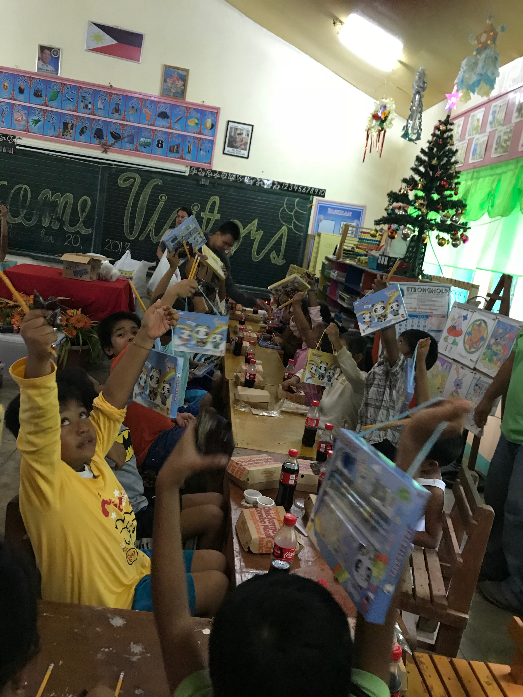
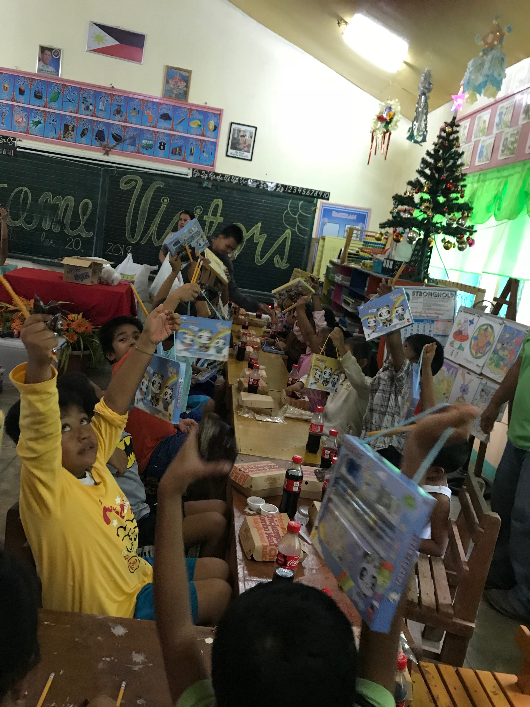

I had one week left in the Philippines and a storm was coming. My family and I heard conflicting accounts of how strong exactly this storm would be and when it would hit. Moreover, our Internet was down and we had no TV signal so it was hard to check. We had to choose a day to do the Matam-Is School Feeding, if at all.
Since Matam-Is elementary school was deep in the mountains with a rugged road leading to it, we wanted to make sure weather conditions were optimal to make the haul of one hundred Jollibee meals, Coca Cola bottles, and school supplies as smooth as possible. We also had to let the teaching staff know what day in advance we were going to come so that the students could tell their families they wouldn’t be home for lunch as students in the Philippines usually go home for their lunch break. We could’ve gone to a school that was easier to access but since my great grandfather had donated this land for the school, we felt it was important to start here.
We heard the storm would hit on Wednesday so we decided on Tuesday, November 20, 2018. We went to Jollibee to place our order of C3 meals which included chicken and Filipino spaghetti, along with extra rice. Then we separately bought small Coca Cola bottles (mismos) that would be easier to transport than Jollibee’s drinks in paper cups. My parents also had some M&M candy, and number 2 pencils they brought from the US they would give out as well. All this cost us about 12,800 Pesos, or 200-300 USD. Things seemed to be ready.
Then our family member who is a teacher at Matam-Is Elementary School texted us to say classes were going to be cancelled on Tuesday. But she said that she could tell the students to still come and for the young students who might have trouble walking to school in this weather they could bring their nanny’s/family members.
“The show must go on,” my mother said.
On Tuesday morning it rained lightly. We packed up a rented multi cab with the food and our other family members who came to help. Then started on the journey to Matam-Is Elementary. The light rain continued but didn’t prove to be a big deterrent in our drive up the mountain.
When we arrived at the school, the fifty-one students who were already present (one was absent) immediately stood up and welcomed us. Since class was cancelled they weren’t in uniform but dressed in their best attire. We organized the food in the center of the classroom but before we could pass out the food, the principal and some students said some words to thank us for sharing our blessings and they said a prayer. The principal asked me to say a few words but I was honestly not ready haha. Then we distributed the food, then the school supplies and candies to the students, staff, and other family members who came.


 


The storm didn’t turn out to be that bad.
Overall, I’m glad that we went through with the feeding and though we had some stress about the storm and planning it out, in the grand scheme of things going through this inconvenience was minor in comparison to the momentary joy we brought the school. I hope that the students remember this and in the future, pass along the act of kindness to those who are less fortunate than them.
I thank my family and teaching staff at Matam-Is Elementary for their help and Annie Lu for her donations.